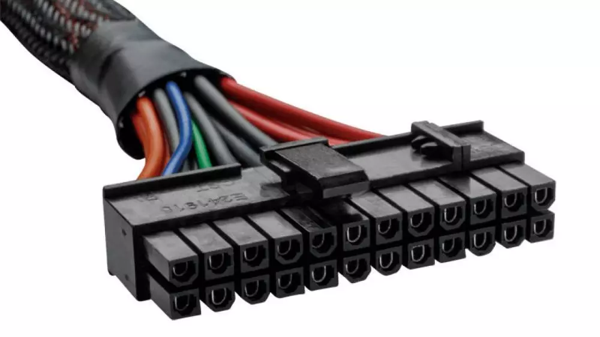
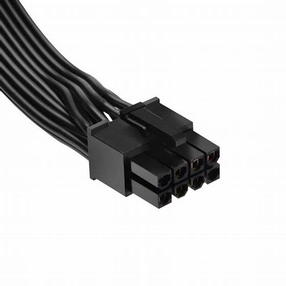
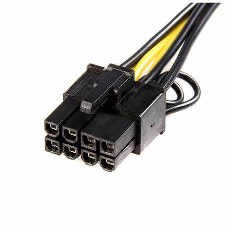
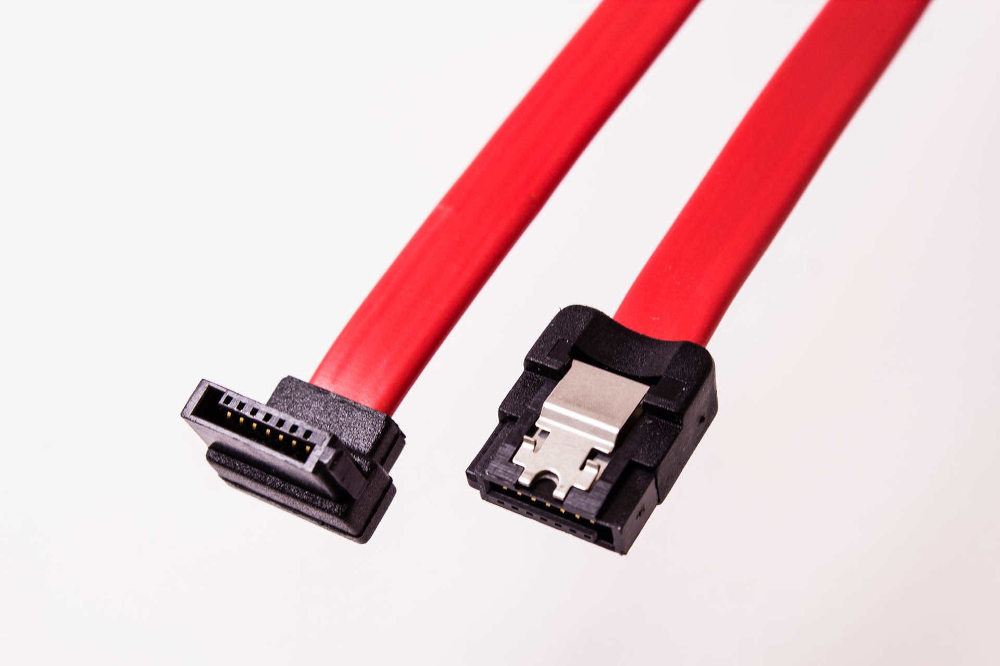
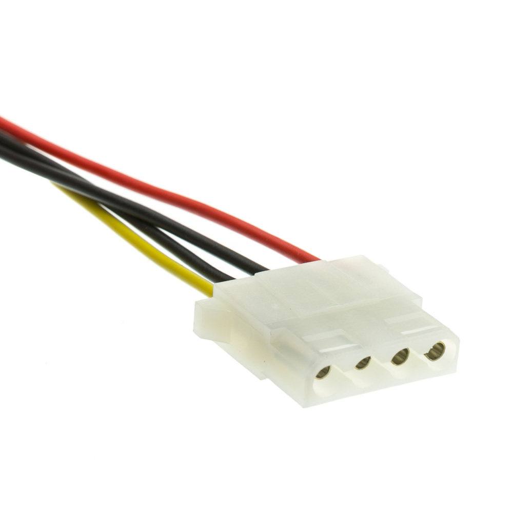
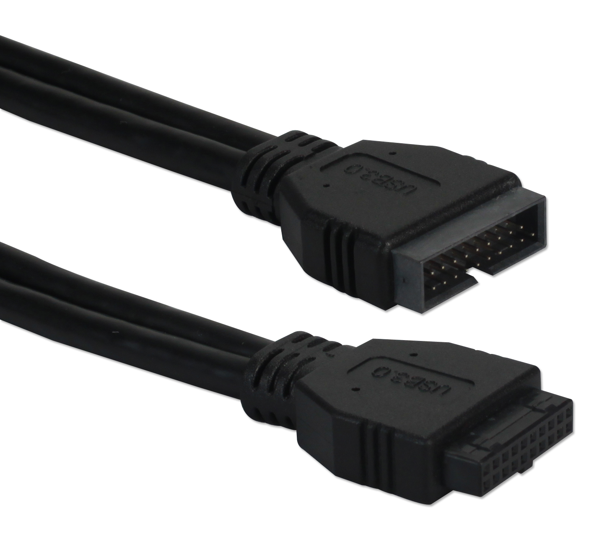
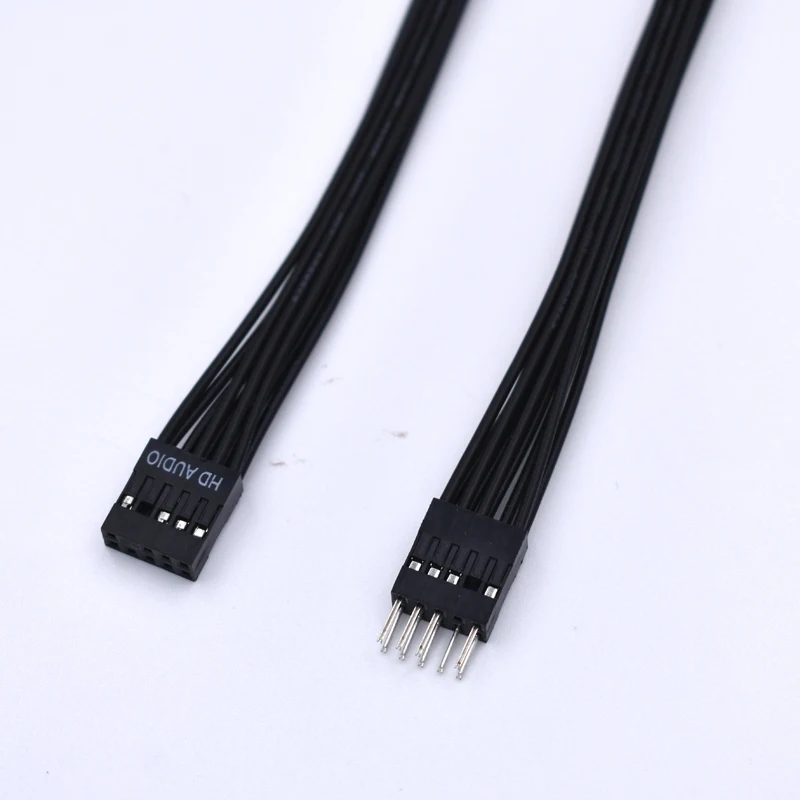
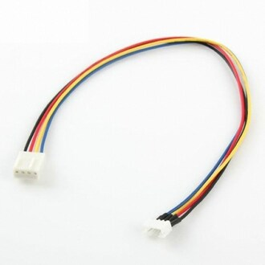
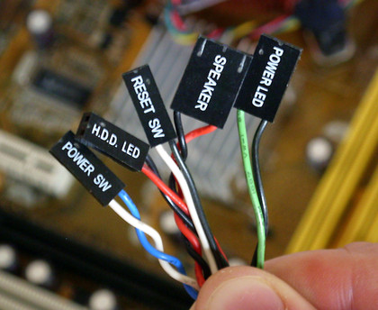
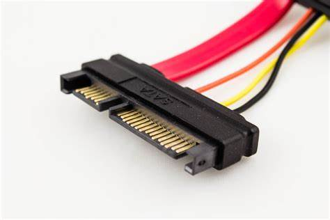

Podstawowe wskazówki
Zamontowanie procesora w płycie głównej wymaga kilku kroków, które zależą od typu procesora i gniazda. Procesor Intel lub AMD można zainstalować na płycie głównej w następujący sposób:
1.
Oparcie płyty głównej na pudełku, co zapewni solidną podstawę do zamontowania komponentów na płycie głównej.
2.
Podniesienie procesora i trzymanie plastikowego pudełka pod ręką (na wypadek, gdybyś musiał odłożyć go z powrotem w bezpieczne miejsce).
3.
Umieszczenie chipa w gniaździe procesora płyty głównej, wyrównując znaki i wycięcia procesora z gniazdem.
4.
Zamknięcie pokrywy gniazda i naciśnięcie dźwigni, aby zablokować gniazdo.
5.
Nałożenie niewielkiej ilości nowej pasty termoprzewodzącej na środek procesora, rozprowadzając ją równomiernie po całej powierzchni.
6.
Umieszczenie chłodzenia na procesorze, dopasowując otwory montażowe do otworów na płycie głównej.
7.
Przykręcenie chłodzenia do płyty głównej za pomocą śrub lub zatrzasków, zwracając uwagę na równomierny nacisk na procesor.
8.
Podłączenie wentylatora chłodzenia do złącza na płycie głównej, zazwyczaj oznaczonego jako CPU_FAN lub CPU_OPT.
9.
Włączenie komputera i sprawdzenie, czy chłodzenie działa poprawnie, monitorując temperaturę procesora i prędkość wentylatora.
Oto przykładowy film instruktażowy.
1.
Przygotuj narzędzia i akcesoria potrzebne do instalacji.
2.
Otwórz obudowę komputera i umieść ją na płaskiej powierzchni.
3.
Zidentyfikuj miejsce, w którym płyta główna będzie zamontowana. Zazwyczaj znajduje się ono w dolnej części obudowy.
4.
Przykręć dystanse do obudowy w miejscach, w których płyta główna będzie przymocowana.
5.
Umieść płytę główną na dystansach i upewnij się, że otwory montażowe na płycie głównej pokrywają się z dystansami.
6.
Przykręć płytę główną do dystansów za pomocą śrubek montażowych.
7.
Podłącz kable zasilające do płyty głównej i zasilacza.
*( jeśli masz zainstalowany zasilacz )
8.
Podłącz kable do portów USB, audio i innych portów na płycie głównej.
Zamontowanie karty graficznej w płycie głównej wymaga kilku prostych kroków, które zależą od typu karty. Można ją zainstalować na płycie głównej w następujący sposób:
1.
Zlokalizuj slot PCI-E na płycie głównej.
2.
Włóż kartę graficzną do gniazda PCI-E. Upewnij się, że karta trzyma się na całej długości gniazda.
3.
Podłącz kabel lub kable zasilające do karty graficznej, jeśli wymaga to instrukcja montażu.
4.
Przykręć śrubki mocujące kartę graficzną do obudowy.
5.
Zastosuj podpórkę, jeśli karta jest duża i ciężka - pozwoli to na zachowanie portu PCI-E w lepszej kondycji oraz pomoże zapobiegnie awarii podczas większego drgania.
1.
Zlokalizuj slot M.2 na płycie głównej..
2.
Włóż dysk M.2 do gniazda M.2. Upewnij się, że dysk trzyma się na całej długości gniazda.
3.
Przykręć śrubki mocujące dysk M.2 do obudowy.
4.
Załóż radiator, jeśli twój dysk lub płyta go posiada.
1.
Znajdź miejsce na przykręcenie dysku, oraz upewnij się że dasz rade podłączyć go kablem SATA do płyty głównej.
2.
Przykreć dysk do obudowy.
3.
Podepnij kabel SATA do dysku oraz płyty głównej.
4.
Podepnij kabel zasilający do dysku.
1.
Zlokalizuj sloty pamięci RAM na płycie głównej.
2.
Jeśli nie wypełniamy wszystkich slotów na płycie głównej, warto upewnić się, które sloty powinniśmy wybrać. Różni producenci wskazują różne banki, które powinny być wybrane, aby zapewnić optymalną wydajność i stabilność systemu.
3.
Otwórz zatrzaski na bokach slotów pamięci RAM.
4.
Włóż kość pamięci RAM do slotu, upewniając się, że kość trzyma się na całej długości slotu.
4.
Wciśnij kość pamięci RAM w slot, aż zatrzaski zaskoczą na swoje miejsce.
Zamontowanie zasilacza i odpowiednie poprowadzenie kabli jest najbardziej czasochłonną częscią składania komputera. Przed przystąpieniem do podpinania kabli zaleca się wstępne zaplanowanie jak będą poprowadzone kable oraz pogrupowane. Warto obejrzeć jakiś film instruktażowy lub obejrzeć zdjęcia złożonego już komputera aby mieć jakiś obraz, jak powinien wyglądać efekt końcowy.
1.
Przykręć zasilacz do tylnej ścianki obudowy.
2.
Poprowadź kable zasilające do komponentów komputera, upewniając się, że są one poprawnie podłączone. Wiele obudów ma specjalne kanały do zarządzania kablami, które pomogą Ci uporządkować kable i uniknąć bałaganu w obudowie.
3.
Przymocuj kable do obudowy za pomocą opasek błyskawicznych lub pasków na rzepy, aby zapewnić porządek w obudowie.
| Kabel | Opis | Zdjęcie |
|---|---|---|
| ATX 24-pin (24-pinowy złączalny zasilacz) | Ten kabel dostarcza główną moc zasilania do płyty głównej. Składa się z 24 pinów i jest podstawowym zasilaniem dla większości komputerów stacjonarnych. Obejmuje zarówno napięcia dla zasilania procesora, pamięci RAM, jak i pozostałych komponentów na płycie głównej. |  |
| ATX 8-pin / CPU Power (8-pinowy złączalny zasilacz CPU) | Ten kabel dostarcza dodatkową moc zasilania dla procesora. W przypadku niektórych płyt głównych może występować w postaci 4-pinowego złącza, ale wiele nowoczesnych procesorów i płyt głównych wymaga 8-pinowego zasilania CPU. |  |
| PCIe (zasilanie karty graficznej) | Karty graficzne wymagają dodatkowego zasilania, które dostarcza kabel PCIe. Dostępne są różne wersje tego kabla, takie jak PCIe 6-pin, PCIe 8-pin, a także kombinacje, takie jak 6+2-pin, które mogą być używane do różnych kart graficznych. |  |
| SATA (zasilanie i transfer danych dla urządzeń pamięci masowej) | Kabel SATA jest używany do zasilania i przesyłania danych pomiędzy płytą główną a urządzeniami pamięci masowej, takimi jak dyski twarde, SSD czy napędy optyczne. |  |
| Molex (starsze urządzenia peryferyjne) | Kablowanie Molex jest starszym standardem, który był powszechnie używany do zasilania starszych urządzeń peryferyjnych, takich jak napędy optyczne, wentylatory, czy inne dodatkowe komponenty. |  |
| USB (Universal Serial Bus) | Kable USB służą do łączenia różnych urządzeń peryferyjnych z komputerem, takich jak klawiatury, myszy, drukarki, itp. |  |
| HD Audio (Audio Front Panel) | Kabel HD Audio łączy przedni panel obudowy z płytą główną, umożliwiając podłączenie gniazd słuchawkowych i mikrofonowych dostępnych na przednim panelu obudowy. |  |
| Wentylatory (CPU Fan, Case Fan) | Kable od wentylatorów służą do zasilania i kontrolowania obrotów wentylatorów. W przypadku wentylatora procesora (CPU Fan) często łączony jest z odpowiednim złączem na płycie głównej, umożliwiając kontrolę obrotów w zależności od temperatury procesora. Wentylatory obudowy mogą być również podłączane do złącz na płycie głównej lub do kontrolera wentylatorów, jeśli obudowa posiada taki element. |  |
| Kable od obudowy (Power Switch, Reset Switch, HDD LED, Power LED) | Kable te łączą przyciski zasilania, resetu, diodę sygnalizacyjną pracy dysku twardego (HDD LED) oraz diodę sygnalizującą zasilanie (Power LED) z odpowiednimi złączami na płycie głównej. Umożliwiają one obsługę przycisków na przednim panelu obudowy oraz informują o stanie pracy komputera. | |
| USB Front Panel (USB 2.0, USB 3.0) | Kablowanie USB Front Panel łączy porty USB na przednim panelu obudowy z odpowiednimi złączami na płycie głównej, umożliwiając podłączenie urządzeń USB do komputera. |  |
| SATA Power (zasilanie urządzeń pamięci masowej) | Podobnie jak kabel SATA, ale służy jedynie do zasilania urządzeń pamięci masowej, takich jak dyski twarde czy SSD. |  |
Składanie komputera to czasochłonna rzecz, która wymaga odpowiedniej wiedzy, przed przystąpieniem warto poczytać różnych poradników lub obejrzeć filmy, które przedstawią ten proces krok po kroku.
Oto przykładowy film instruktażowy.